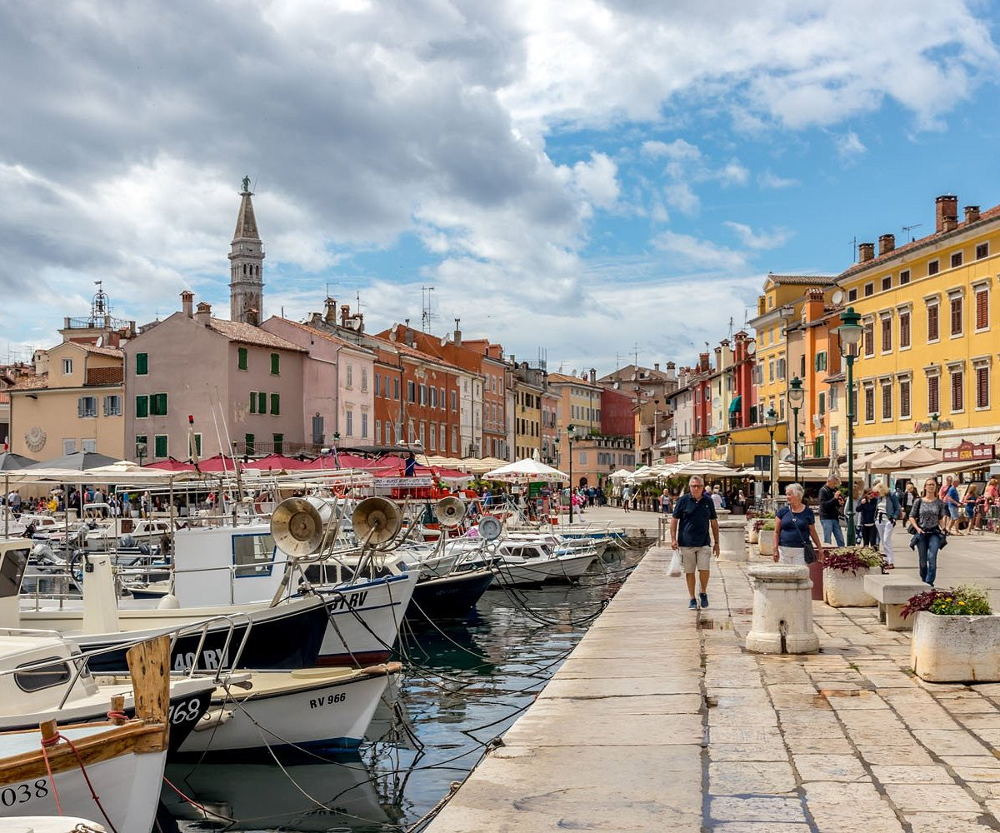
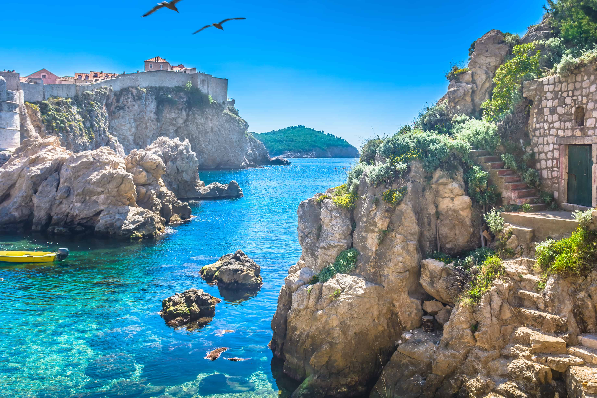

Adriatic Coastline: Turquoise Waters and Hidden Coves
Croatia's Adriatic coastline is renowned for its stunning beauty, with crystal-clear waters lapping against rugged cliffs and picturesque islands. From the vibrant city of Dubrovnik, with its iconic medieval walls, to the tranquil beaches of Hvar and Korčula, the Adriatic coast offers endless opportunities for sun-soaked relaxation and exploration.
Plitvice Lakes National Park: A Symphony of Waterfalls and Lakes
Plitvice Lakes National Park is a natural wonderland, with cascading waterfalls, emerald-green lakes, and lush forests that seem straight out of a fairy tale. Visitors can explore the park's network of wooden walkways and bridges, marveling at the interplay of light and water as they discover its hidden treasures.
Krka National Park: Serene Waterways and Verdant Gorges
Krka National Park is a paradise for nature lovers, with its winding waterways, cascading waterfalls, and verdant gorges. The park's crown jewel is Skradinski Buk, a series of stunning waterfalls surrounded by lush vegetation, where visitors can swim, hike, and explore the park's rich biodiversity.
Paklenica National Park: Rocky Peaks and Dramatic Canyons
Paklenica National Park is a haven for outdoor enthusiasts, with its rugged peaks, deep canyons, and diverse wildlife. Hiking trails wind through the park's karst landscape, offering breathtaking views of the Adriatic Sea and the surrounding mountains.
Kornati National Park: A Maritime Wonderland of Unspoiled Beauty
The Kornati National Park, often referred to as a nautical paradise, is an archipelago consisting of around 140 islands, islets, and reefs scattered in the Adriatic Sea. Characterized by its rugged karst landscapes, crystal-clear turquoise waters, and dramatic cliffs, the Kornati islands offer a unique and unspoiled natural beauty. Visitors can explore the park's pristine beaches, hidden coves, and secluded bays, perfect for swimming, snorkeling, and diving adventures. With its serene ambiance and breathtaking vistas, the Kornati National Park is a haven for nature lovers and sailing enthusiasts seeking tranquility amidst Croatia's stunning coastal landscapes.
Mljet National Park: A Verdant Oasis of Natural Beauty
Mljet National Park, located on the island of Mljet in the southern Adriatic Sea, is a pristine oasis of lush forests, tranquil lakes, and scenic coastline. The park's centerpiece is the stunning Great Lake (Veliko jezero) and Small Lake (Malo jezero), surrounded by dense pine forests and dotted with tiny islets. Visitors can explore the park's hiking and cycling trails, rent kayaks or paddleboats to explore the lakes, or visit the picturesque islet of St. Mary with its Benedictine monastery. With its unspoiled landscapes and serene ambiance, Mljet National Park offers a tranquil escape into nature.

Rovinj: A Picturesque Coastal Gem
Rovinj, located on the Istrian Peninsula, is a charming coastal town renowned for its medieval architecture, cobblestone streets, and vibrant harbor. The town's iconic Old Town, perched on a hill overlooking the Adriatic Sea, is a maze of narrow alleys, colorful houses, and historic landmarks such as the Church of St. Euphemia. Visitors can stroll along the waterfront promenade, explore art galleries and boutiques, or relax at picturesque cafes while soaking in the enchanting atmosphere of this coastal gem.

Dubrovnik: The Pearl of the Adriatic
Dubrovnik, often referred to as the "Pearl of the Adriatic," is a UNESCO World Heritage Site renowned for its well-preserved medieval walls, historic architecture, and stunning coastal views. The city's Old Town is a labyrinth of narrow streets and squares lined with elegant palaces, churches, and museums. Visitors can walk along the fortified walls for panoramic vistas of the Adriatic Sea, explore landmarks such as the iconic Rector's Palace and Dubrovnik Cathedral, or simply soak up the ambiance at one of the many charming cafes or restaurants.